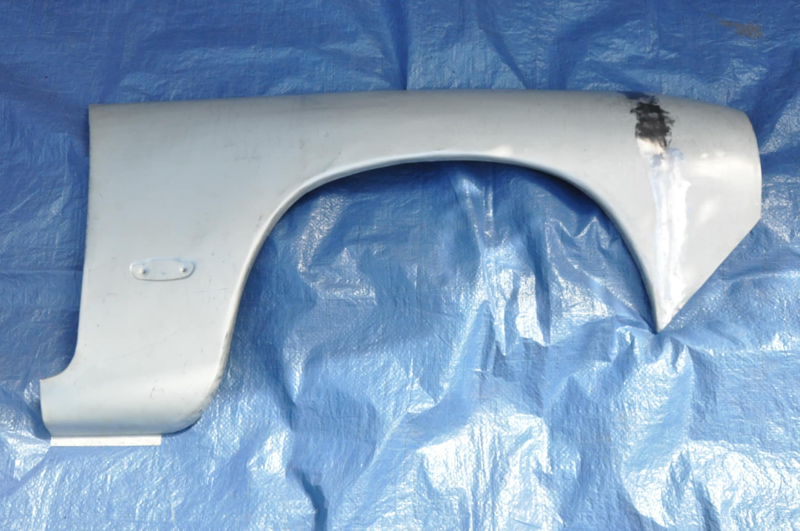
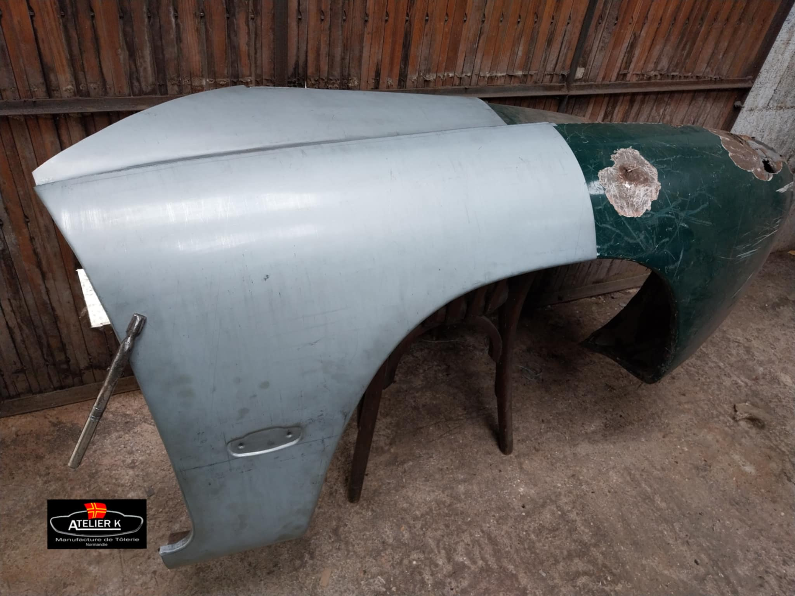
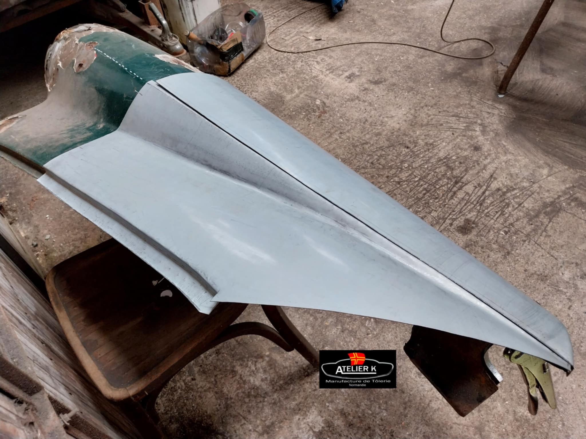
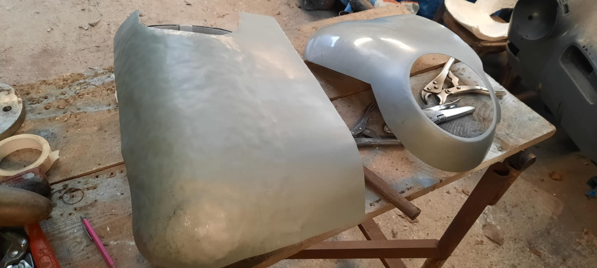
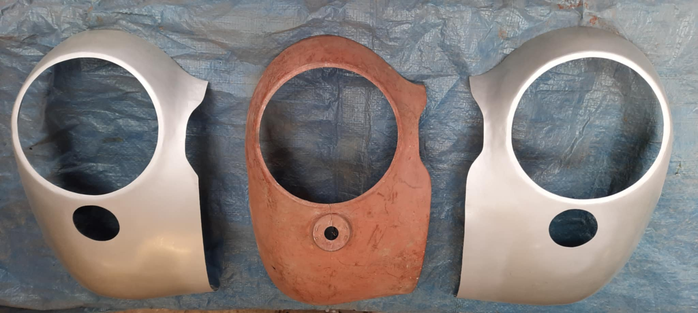
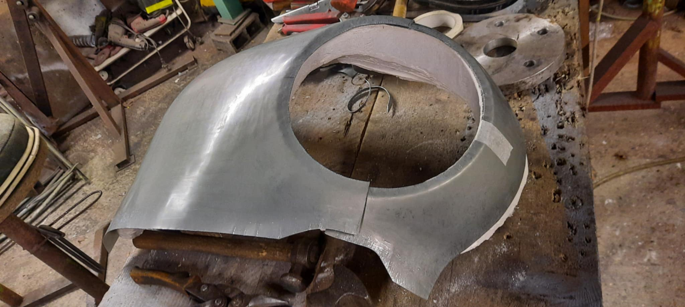
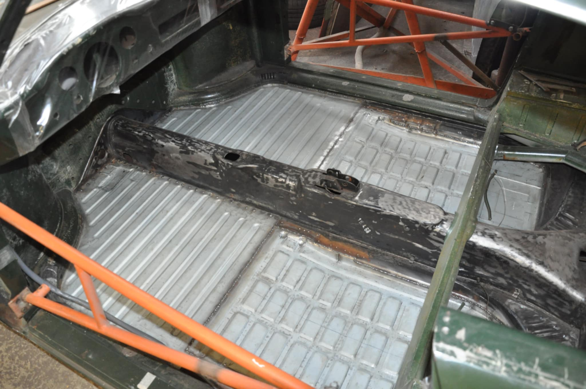
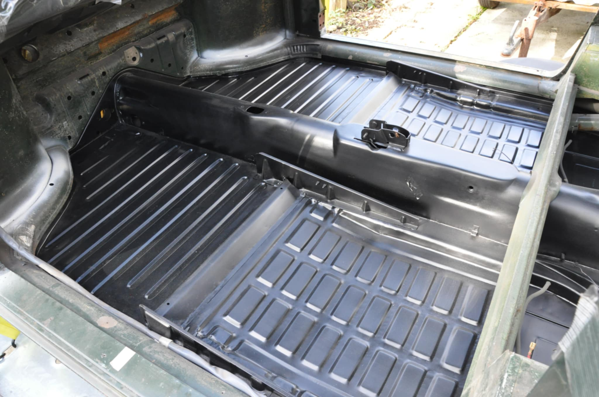
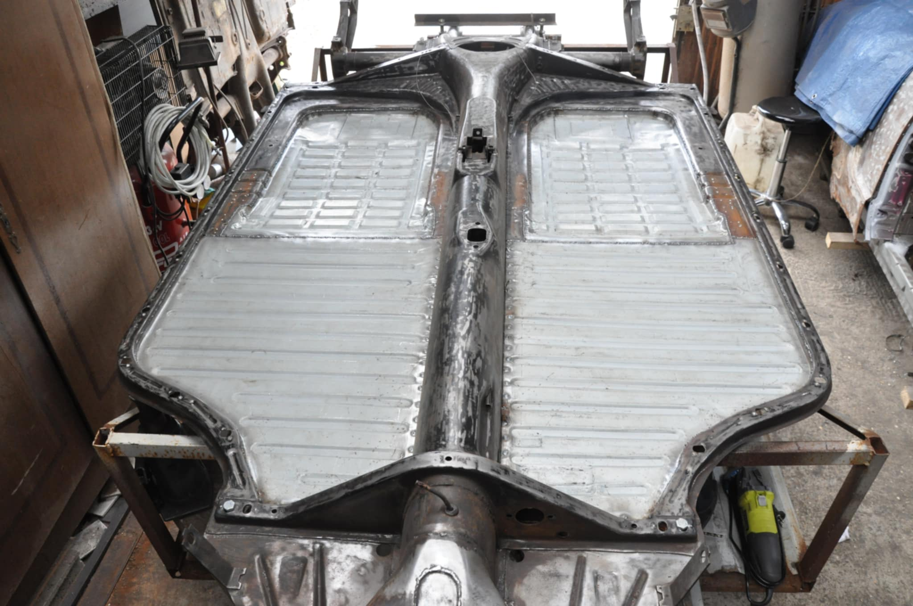

L'atelier est séparé en deux fonctions : la vente de pièces fabriquées sur mesure à la demande, et la restauration (tôlerie uniquement) de véhicules clients.
Pour la partie restauration, la clientèle est principalement française, mais aussi belge et espagnole.
Les pièces Atelier K sont elles expédiées partout dans le monde
et sont présentes sur les cinq continents, dans des pays comme l'Australie, l'Afrique du Sud, l'Inde,
le Mexique ou encore les États-Unis, avec également des clients français et européens en majorité.
Toutes ces pièces sont réalisées uniquement avec de la tôle électrozinguée de 8/10ème ou 10/10ème d'épaisseur.
Celles-ci étant fabriquées à la main, des demandes de fabrications spécifiques sont possibles ici :








